Redis：（一）内存数据结构存储
Redis
Redis简介
Redis 官方文档：
Redis 是一个开源(BSD 许可)的内存数据结构存储，用作数据库、缓存、消息代理和流引擎。Redis提供数据结构，例如字符串、散列、列表、集合、带范围查询的排序集合、位图、超日志、地理空间索引和流。Redis 内置了复制、Lua 脚本、LRU驱逐、事务和不同级别的磁盘持久性，并通过以下方式提供高可用性 Redis Sentinel 和 Redis Cluster 的自动分区。
使用 Redis 可以对这些类型运行原子操作，例如附加到字符串；增加哈希值；将元素推入列表；计算集交、并、差；或获取排序集中排名最高的成员。
为了达到最佳性能，Redis 使用内存中的数据集。根据您的用例，Redis 可以通过定期将数据集转储到磁盘或将每个命令附加到基于磁盘的日志来持久化您的数据。如果您只需要一个功能丰富的网络内存缓存，您也可以禁用持久性。
Redis支持异步复制，具有快速非阻塞同步和自动重新连接以及网络拆分上的部分重新同步。
Redis还包括：
- 交易
- 发布/订阅
- Lua脚本
- 生命周期有限的密钥
- LRU驱逐密钥
- 自动故障转移
Redis VS Memcached
很多人都说用Redis作为缓存，但是Memcached也是基于内存的数据库，为什么不选择它作为缓存呢?
要解答这个问题，我们就要弄清楚Redis和Memcached的区别。Redis 与Memcached共同点:
- 都是基于内存的数据库，一般都用来当做缓存使用。
- 都有过期策略。
- 两者的性能都非常高。
Redis与Memcached区别:
- Redis支持的数据类型更丰富(String、 Hash、 List、 Set、 ZSet) ，而Memcached只支持最简单的key-value数据类型；
- Redis 支持数据的持久化，可以将内存中的数据保持在磁盘中，重启的时候可以再次加载进行使用，而Memcached没有持久化功能，数据全部存在内存之中，Memcached 重启或者挂掉后，数据就没了；
- Redis原生支持集群模式，Memcached没有原生的集群模式，需要依靠客户端来实现往集群中分片写入数据
- Redis 支持发布订阅模型、Lua 脚本、事务等功能，而Memcached不支持；
数据结构
基本数据结构 & 版本迭代新增
Redis3.0之前提供了5中基本类型：string、list、hash、set、zset。

每个数据结构存储的内容如下：
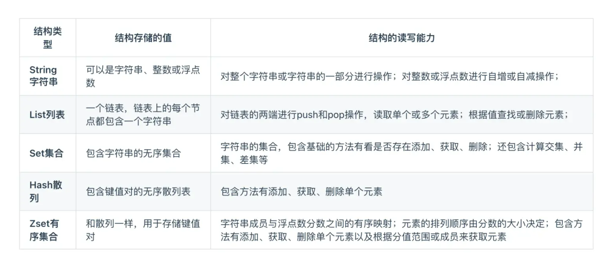
随着Redis版本的更新，后面又支持了四种数据类型: BitMap (2.2 版新增)、HyperLogLog (2.8 版新增)、GEO (3.2 版新增)、Stream (5.0 版新增)
- BitMap (2.2版新增) ：二值状态统计的场景，比如签到、判断用户登陆状态、连续签到用户总数等；
- HyperLogLog (2.8 版新增) ：海量数据基数统计的场景，比如百万级网页UV计数等；
- GEO (3.2版新增) ：存储地理位置信息的场景，比如滴滴叫车；
- Stream (5.0版新增) ：消息队列，相比于基于List类型实现的消息队列，有这两个特有的特性:自动生成全局唯一消息ID， 支持以消费组形式消费数据。
值得一提的是，有序集合可以用来处理热点数据。比如，一段时间内访问量比较多时，有序集合的成员对应的分数值可以偏高。但是设置分数是手动的，实现 “自动” 可以问下AI。
底层实现
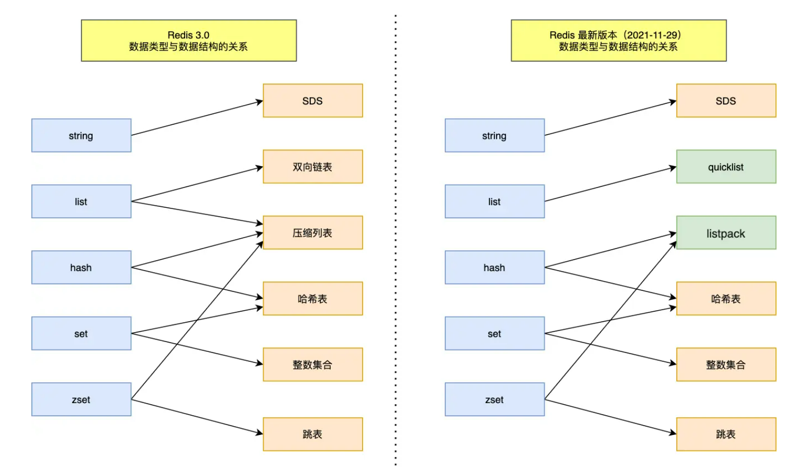
我挑几个来写：
String：SDS
SDS，simple dynamic string，简单动态字符串。SDS 和我们认识的C字符串不太一样，之所以没有使用C语言的字符串表示，因为SDS相比于C的原生字符串具有如下的特点:
- SDS不仅可以保存文本数据，还可以保存二进制数据。因为SDS使用len属性的值而不是空字符来判断字符串是否结束，并且SDS的所有API都会以处理二进制的方式来处理SDS存放在buf[]数组里的数据。所以SDS不光能存放文本数据，而且能保存图片、音频、视频、压缩文件这样的二进制数据。
- SDS获取字符串长度的时间复杂度是0(1)。 因为C语言的字符串并不记录自身长度，所以获取长度的复杂度为O(n)；而SDS结构里用len属性记录了字符串长度，所以复杂度为0(1)。
- Redis的SDS API是安全的，拼接字符串不会造成缓冲区溢出。因为SDS在拼接字符串之前会检查SDS空间是否满足要求，如果空间不够会自动扩容，所以不会导致缓冲区溢出的问题。
listpack
ziplist的改进，旨在更高效地存储小数据集合，如字符串、整数等。
skiplist
优化有序链表的查找。一个节点不是像链表一样按顺序，而是连接多个节点。
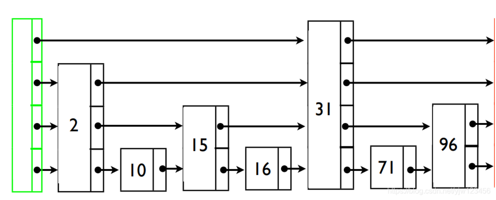
单线程模型
新增的三个后台线程
Redis单线程指的是「接收客户端请求- >解析请求->进行数据读写等操作->发送数据给客户端」这个过程是由一个线程(主线程)来完成的，这也是我们常说Redis是单线程的原因。redis 中的读写操作都是靠的主线程。
但是，Redis 程序并不是单线程的，Redis 在启动的时候，是会启动后台线程(BIO) 的：
- Redis在2.6版本，会启动2个后台线程，分别处理关闭文件、AOF刷盘这两个任务；
- Redis在4.0版本之后，新增了一个新的后台线程，用来异步释放Redis内存，也就是lazyfree线程。
例如执行unlink key / flushdb async / flushall async等命令，会把这些删除操作交给后台线程来执行，好处是不会导致Redis主线程卡顿。因此，当我们要删除一个大 key的时候，不要使用del命令删除，因为del是在主线程处理的，这样会导致Redis主线程卡顿，因此我们应该使用unlink命令来异步删除大key。
之所以Redis为「关闭文件、AOF 刷盘、释放内存」这些任务创建单独的线程来处理，是因为这些任务的操作都是很耗时的，如果把这些任务都放在主线程来处理，那么Redis主线程就很容易发生阻塞，这样就无法处理后续的请求了。
后台线程相当于一个消费者，生产者把耗时任务丢到任务队列中，消费者(BIO) 不停轮询这个队列，拿出任务就去执行对应的方法即可。
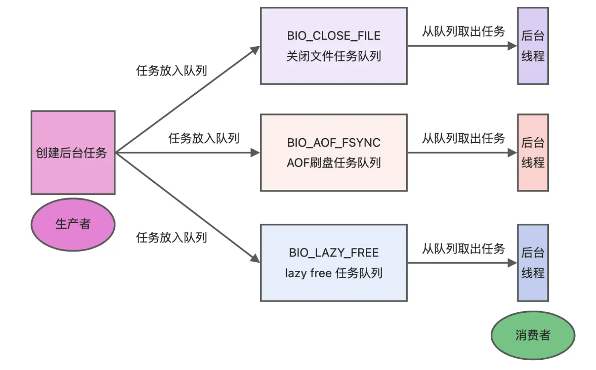
关闭文件、AOF 刷盘、释放内存这三个任务都有各自的任务队列:
- BIO_CLOSE_ FILE，关闭文件任务队列：当队列有任务后，后台线程会调用close(fd) ，将文件关闭；
- BIO_ AOF_ FSYNC， AOF刷盘任务队列：当AOF日志配置成everysec选项后，主线程会把AOF写日志操作封装成一个任务，也放到队列中。当发现队列有任务后，后台线程会调用fsync(fd)，将AOF文件刷盘；
- BIO_ LAZY_ FREE， lazy free任务队列：Lazy Free机制允许Redis以异步方式释放键所占用的内存。当使用Lazy Free时，删除操作不会立即释放内存，而是将删除任务交给后台线程BIO来处理。当队列有任务后，后台线程会free(obj) 释放对象/ free(dict)删除数据库所有对象/ free(skiplist)释放跳表对象；
文件任务队列关闭什么文件？
Redis在运行时需要打开多个文件描述符，这些文件描述符可能代表：
- 客户端连接：Redis服务器监听端口上的每个客户端连接都会占用一个文件描述符。
- AOF文件：如果启用了AOF持久化，Redis会打开一个（或多个，在AOF重写时）文件描述符来写入AOF文件。
- RDB快照文件：在创建RDB快照时，Redis会打开一个文件描述符来写入快照数据。
- 临时文件：Redis在执行某些操作时（如AOF重写）可能会使用临时文件，这些文件也需要文件描述符。
Lazy Free有什么内存淘汰策略的关联？
- 关联点：在内存淘汰过程中，如果启用了Lazy Free机制，那么被淘汰的键的删除操作可能会被异步执行。这意味着，当Redis根据内存淘汰策略选择了一些键进行删除时，这些删除操作不会立即在主线程中同步完成，而是会被放入BIO队列中，由后台线程异步处理。
- 不同点：内存淘汰机制是Redis在内存不足时用于释放内存的策略选择，而Lazy Free机制则是一种优化删除操作的手段。Lazy Free可以与内存淘汰机制结合使用，但不是内存淘汰机制的必要组成部分。
内存淘汰策略指的是按照一定的算法，对长期不使用的数据清理掉。下文会介绍详细的内容。
持久化
RDB快照文件
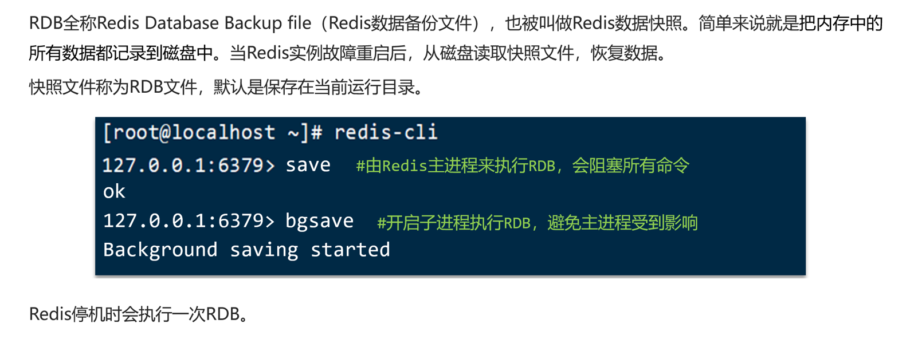
在Linux的部分：可以看到RDB持久化在Redis中是默认实现的。

演示一下Redis的持久化：在先前的终端启动redis后，打开另外一个终端测试redis持久化
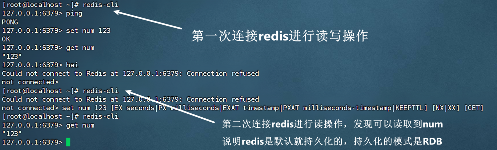
save & bgsave
Redis 提供了两个命令来生成 RDB 文件，分别是 save 和 bgsave，他们的区别就在于是否在「主线程」里执行：
- 执行了 save 命令，就会在主线程生成 RDB 文件，由于和执行操作命令在同一个线程，所以如果写入 RDB 文件的时间太长，会阻塞主线程；
- 执行了 bgsave 命令，会创建一个子进程来生成 RDB 文件，这样可以避免主线程的阻塞；
Redis 还可以通过配置文件的选项来实现每隔一段时间自动执行一次 bgsave 命令，默认会提供以下配置：
1 | save 900 1 |
别看选项名叫 save，实际上执行的是 bgsave 命令，也就是会创建子进程来生成 RDB 快照文件。
只要满足上面条件的任意一个，就会执行 bgsave，它们的意思分别是：
- 900 秒之内，对数据库进行了至少 1 次修改；
- 300 秒之内，对数据库进行了至少 10 次修改；
- 60 秒之内，对数据库进行了至少 10000 次修改。
这里提一点，Redis 的快照是全量快照，也就是说每次执行快照，都是把内存中的「所有数据」都记录到磁盘中。
所以可以认为，执行快照是一个比较重的操作，如果频率太频繁，可能会对 Redis 性能产生影响。如果频率太低，服务器故障时，丢失的数据会更多。
通常可能设置至少 5 分钟才保存一次快照，这时如果 Redis 出现宕机等情况，则意味着最多可能丢失 5 分钟数据。
这就是 RDB 快照的缺点，在服务器发生故障时，丢失的数据会比 AOF 持久化的方式更多，因为 RDB 快照是全量快照的方式，因此执行的频率不能太频繁，否则会影响 Redis 性能，而 AOF 日志可以以秒级的方式记录操作命令，所以丢失的数据就相对更少。
执行快照时，数据是否可以被修改
执行 bgsave 过程中，Redis 依然可以继续处理操作命令的，也就是数据是能被修改的。
那具体如何做到到呢？关键的技术就在于写时复制技术（Copy-On-Write, COW）。
执行 bgsave 命令的时候，会通过 fork() 创建子进程，此时子进程和父进程是共享同一片内存数据的，因为创建子进程的时候，会复制父进程的页表，但是页表指向的物理内存还是一个。
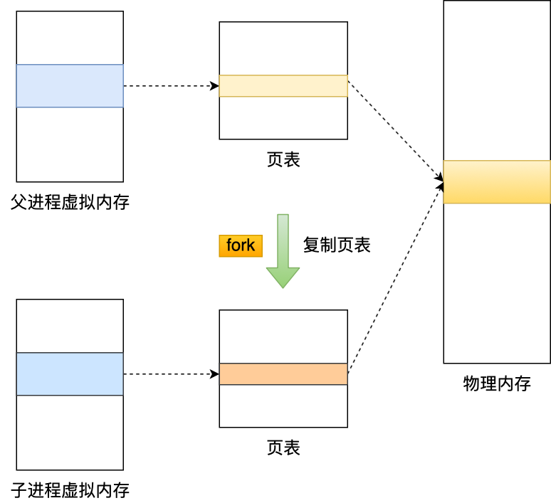
只有在发生修改内存数据的情况时，物理内存才会被复制一份。
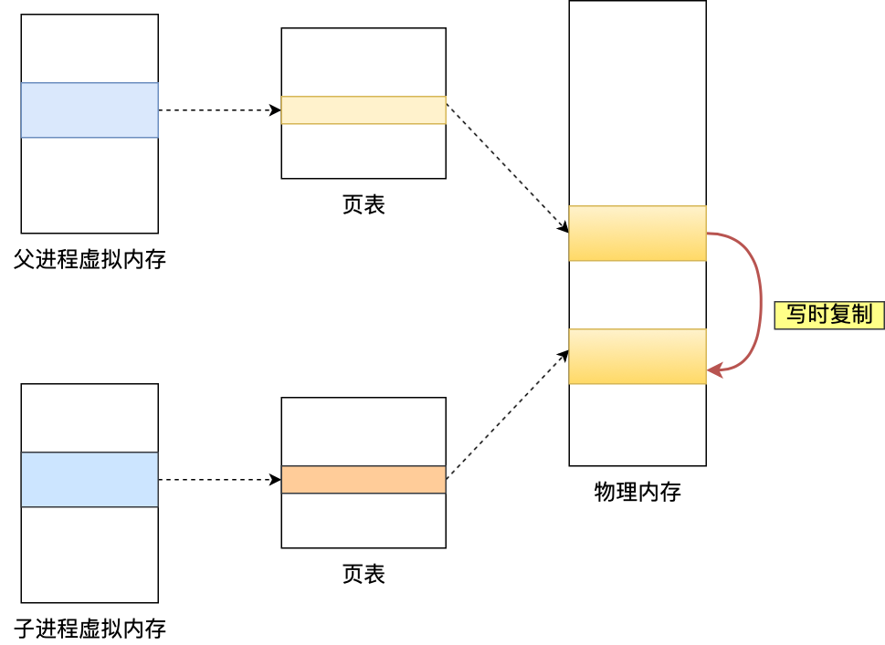
这样的目的是为了减少创建子进程时的性能损耗，从而加快创建子进程的速度，毕竟创建子进程的过程中，是会阻塞主线程的。
所以，创建 bgsave 子进程后，由于共享父进程的所有内存数据，于是就可以直接读取主线程（父进程）里的内存数据，并将数据写入到 RDB 文件。
可能发生的情况：
bgsave 快照过程中，如果主线程修改了共享数据，发生了写时复制后，RDB 快照保存的是原本的内存数据，而主线程刚修改的数据，是没办法在这一时间写入 RDB 文件的，只能交由下一次的 bgsave 快照。
所以 Redis 在使用 bgsave 快照过程中，如果主线程修改了内存数据，不管是否是共享的内存数据，RDB 快照都无法写入主线程刚修改的数据，因为此时主线程（父进程）的内存数据和子进程的内存数据已经分离了，子进程写入到 RDB 文件的内存数据只能是原本的内存数据。
如果系统恰好在 RDB 快照文件创建完毕后崩溃了，那么 Redis 将会丢失主线程在快照期间修改的数据。
AOF追加文件
缓冲中的写操作的具体指令（读操作记录是没有意义的），会写AOF文件中，进行数据恢复时将文件中的指令逐一执行。
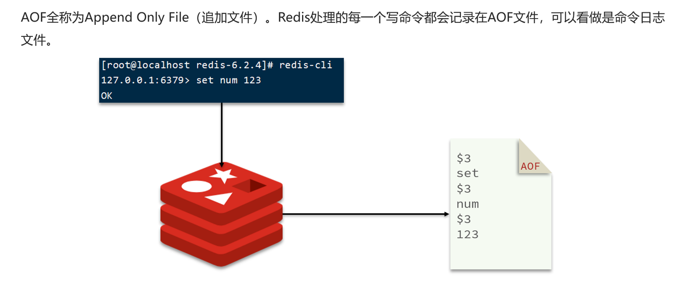
开启配置和刷新频率
AOF文件默认关闭，需要手动开启。
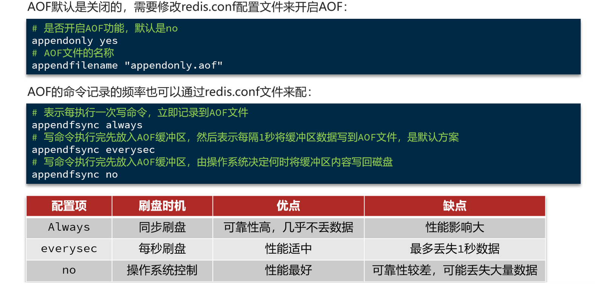
重写机制
AOF 日志是一个文件，随着执行的写操作命令越来越多，文件的大小会越来越大。
如果当 AOF 日志文件过大就会带来性能问题，比如重启 Redis 后，需要读 AOF 文件的内容以恢复数据，如果文件过大，整个恢复的过程就会很慢。
所以，Redis 为了避免 AOF 文件越写越大，提供了 AOF 重写机制，当 AOF 文件的大小超过所设定的阈值后，Redis 就会启用 AOF 重写机制，来压缩 AOF 文件。
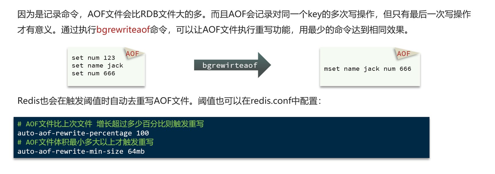
自动重写就是使用两个参数，后台重写是使用bgrewriteaof命令和fork()线程，通过写时复制技术实现的。
过期删除策略
Redis 使用的过期删除策略是「惰性删除+定期删除」这两种策略配和使用。由于 Redis 的是 主线程 删除，因此需要考虑 CPU 和内存的关系。
惰性删除策略
Redis 是可以对 key 设置过期时间的，因此需要有相应的机制将已过期的键值对删除，而做这个工作的就是过期键值删除策略。
每当我们对一个 key 设置了过期时间时，Redis 会把该 key 带上过期时间存储到一个过期字典（expires dict）中，也就是说「过期字典」保存了数据库中所有 key 的过期时间。
当我们查询一个 key 时，Redis 首先检查该 key 是否存在于过期字典中：
- 如果不在，则正常读取键值；
- 如果存在，则会获取该 key 的过期时间，然后与当前系统时间进行比对，如果比系统时间大，那就没有过期，否则判定该 key 已过期。
惰性删除策略的做法是，不主动删除过期键，每次从数据库访问 key 时，都检测 key 是否过期，如果过期则删除该 key。

惰性删除策略的优点：
- 因为每次访问时，才会检查 key 是否过期，所以此策略只会使用很少的系统资源，因此，惰性删除策略对 CPU 时间最友好。
惰性删除策略的缺点：
- 如果一个 key 已经过期，而这个 key 又仍然保留在数据库中，那么只要这个过期 key 一直没有被访问，它所占用的内存就不会释放，造成了一定的内存空间浪费。所以，惰性删除策略对内存不友好。
定期删除策略
定期删除策略的做法是，每隔一段时间「随机」从数据库中取出一定数量的 key 进行检查，并删除其中的过期key。
Redis 的定期删除的流程：
- 从过期字典中随机抽取 20 个 key；
- 检查这 20 个 key 是否过期，并删除已过期的 key；
- 如果本轮检查的已过期 key 的数量，超过 5 个（20/4），也就是「已过期 key 的数量」占比「随机抽取 key 的数量」大于 25%，则继续重复步骤 1；如果已过期的 key 比例小于 25%，则停止继续删除过期 key，然后等待下一轮再检查。
可以看到，定期删除是一个循环的流程。那 Redis 为了保证定期删除不会出现循环过度，导致线程卡死现象，为此增加了定期删除循环流程的时间上限，默认不会超过 25ms。
定期删除策略的优点：
内存压力适中
定期删除策略通过周期性轮询Redis库中的时效性数据，并采用随机抽取的策略来检查并删除过期的key，从而有效释放了过期键占用的内存。这种方式避免了内存被长期占用，减少了内存浪费。
CPU压力可控
与定时删除策略相比，定期删除策略不会在每个key过期时都立即执行删除操作，从而避免了CPU资源的过度占用
定期删除策略的缺点：
- 难以确定删除操作执行的时长和频率。如果执行的太频繁，就会对 CPU 不友好；如果执行的太少，那又和惰性删除一样了，过期 key 占用的内存不会及时得到释放。
Redis 持久化时，对过期键会如何处理的？
Redis 持久化文件有两种格式：RDB（Redis Database）和 AOF（Append Only File），下面我们分别来看过期键在这两种格式中的呈现状态。
RDB 文件分为两个阶段，RDB 文件生成阶段和加载阶段。
- RDB 文件生成阶段：从内存状态持久化成 RDB（文件）的时候，会对 key 进行过期检查，过期的键「不会」被保存到新的 RDB 文件中，因此 Redis 中的过期键不会对生成新 RDB 文件产生任何影响。
- RDB 加载阶段：RDB 加载阶段时，要看服务器是主服务器还是从服务器，分别对应以下两种情况：
- 如果 Redis 是「主服务器」运行模式的话，在载入 RDB 文件时，程序会对文件中保存的键进行检查，过期键「不会」被载入到数据库中。所以过期键不会对载入 RDB 文件的主服务器造成影响；
- 如果 Redis 是「从服务器」运行模式的话，在载入 RDB 文件时，不论键是否过期都会被载入到数据库中。但由于主从服务器在进行数据同步时，从服务器的数据会被清空。所以一般来说，过期键对载入 RDB 文件的从服务器也不会造成影响。
AOF 文件分为两个阶段，AOF 文件写入阶段和 AOF 重写阶段。
- AOF 文件写入阶段：当 Redis 以 AOF 模式持久化时，如果数据库某个过期键还没被删除，那么 AOF 文件会保留此过期键，当此过期键被删除后，Redis 会向 AOF 文件追加一条 DEL 命令来显式地删除该键值。
- AOF 重写阶段：执行 AOF 重写时，会对 Redis 中的键值对进行检查，已过期的键不会被保存到重写后的 AOF 文件中，因此不会对 AOF 重写造成任何影响。
内存淘汰策略
当 redis 的内存满了以后就会触发内存淘汰策略。
Redis 内存淘汰策略共有八种，这八种策略大体分为「不进行数据淘汰」和「进行数据淘汰」两类策略。
1、不进行数据淘汰的策略
noeviction（Redis3.0之后，默认的内存淘汰策略） ：它表示当运行内存超过最大设置内存时，不淘汰任何数据，而是不再提供服务，直接返回错误。
2、进行数据淘汰的策略
针对「进行数据淘汰」这一类策略，又可以细分为「在设置了过期时间的数据中进行淘汰」和「在所有数据范围内进行淘汰」这两类策略。 在设置了过期时间的数据中进行淘汰：
- volatile-random：随机淘汰设置了过期时间的任意键值；
- volatile-ttl（time to live）：优先淘汰过期并且存活时间最短的键。适用于缓存场景，并且希望首先淘汰即将过期的数据。
- volatile-lru（Least Recently Used）（Redis3.0 之前，默认的内存淘汰策略）：淘汰所有设置了过期时间的键值中，最久没被使用的键值；
- volatile-lfu（Least Frequently Used）（Redis 4.0 后新增的内存淘汰策略）：淘汰所有设置了过期时间的键值中，最少使用的键值；
在所有数据范围内进行淘汰：
- allkeys-random：随机淘汰任意键值;
- allkeys-lru：淘汰整个键值中最久未使用的键值；
- allkeys-lfu（Redis 4.0 后新增的内存淘汰策略）：淘汰整个键值中最少使用的键值。
volatile-lru 和 volatile-lfu有什么区别？
volatile-lru：
Redis 实现的是一种近似 LRU 算法，目的是为了更好的节约内存，它的实现方式是在 Redis 的对象结构体中添加一个额外的字段，用于记录此数据的最后一次访问时间。
当 Redis 进行内存淘汰时，volatile-lru会使用随机采样的方式来淘汰数据，它是随机取 5 个值（此值可配置），然后淘汰最久没有使用的那个。
volatile-lfu：
volatile-lfu是基于频率，在键还没有被淘汰时，这个键在一定时间内被访问的次数和这段时间的比值就构成了频率，淘汰后如果是lfu算法，则比较的是这个频率。
LFU 算法是根据数据访问次数来淘汰数据的，它的核心思想是“如果数据过去被访问多次，那么将来被访问的频率也更高”。